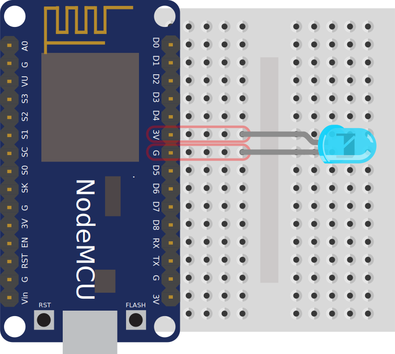
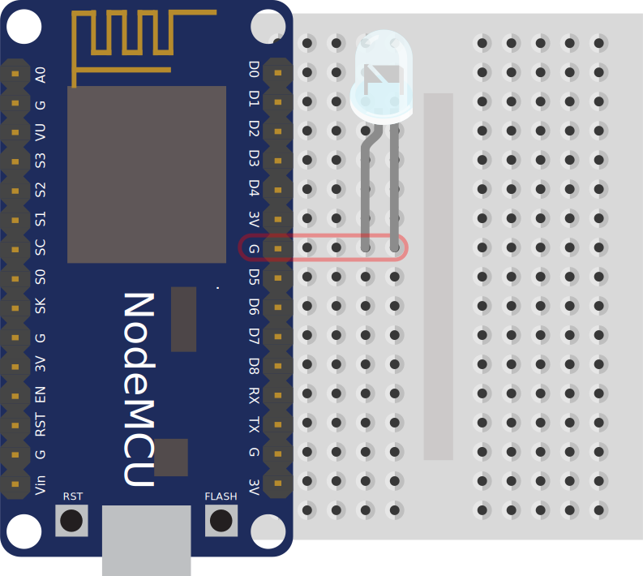
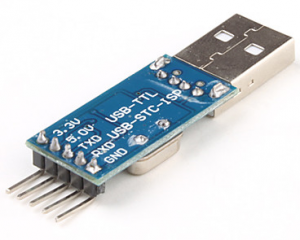

Dnes budeme programovat malý počítač – konkrétně tak malý počítač, že se ho pohodlně schováš v ruce. Konkrétně budeme používat „chytrou destičku” zvanou NodeMCU, která by měla ležet před tebou. Než ji vyndáš z obalu, měla by ses vybít: dotkni se něčeho kovového, co je spojeno se zemí, třeba radiátoru nebo kovové části scránky nějakého spotřebiče, který je zapojený do zásuvky. Tím se zbavíš statické elektřiny, která by mohla malinký počítač poškodit. Pak přístroj vyndej z obalu. Snaž se ho držet za hrany a příliš se nedotýkat elektroniky a kovových částí.
Obal bude nejspíš roztržený, protože organizátoři do počítače před začátkem kurzu nainstalovali MicroPython.
Teď, když malý počítač držíš v ruce, si pojďme projít jeho základní součásti.
Nejdůležitější část našeho počítače je oplechovaná krabička s logem "Wi-Fi" a "FCC": mikroprocesor ESP8266. To je „mozek” celého zařízení, který – když je správně naprogramován – umí provádět Pythoní příkazy a programy. Procesor sedí na malé destičce, na které je ještě anténa, kterou přístroj může komunikovat s okolím.
Tahle malá destička se dá použít i samostatně; všechno ostatní, co kolem ní zabírá tolik místa, nám jen ulehčí hraní a umožní s malým počítačem jednoduše komunikovat a krmit ho elektřinou.
Komunikace a „krmení” se děje přes μUSB konektor, do kterého zapojíš kabel do svého velkého počítače. Když je modul naprogramovaný, stačí ho místo do počítače zapojit do nabíječky či externího zdroje (powerbanky), a bude fungovat samostatně.
Kolem USB konektoru jsou dvě tlačítka:
RST, kterým se
počítač restartuje
(jako kdybys ho odpojila a zase zapojila, což se
hodí když něco uděláš špatně a počítač „zamrzne”),
a FLASH, o kterém
si povíme později.
Po stranách modulu jsou dvě řady „nožiček”, na které se dá napojit celá řada nejrůznějších hraček. Zkontroluj si, jestli jsou všechny nožičky rovné; kdyby byla některá ohnutá, tak ji (nejlépe s pomocí kouče) narovnej nebo si vezmi jiný počítač.
Bohužel se dnes neobejdeme bez instalace. Musíš naučit svůj velký počítač, aby si povídal s tím malým.
Propoj oba počítače přes USB kabel, jako kdybys připojovala třeba mobil.
Je potřeba použít kvalitní datový kabel. Nekvalitní kabely (např. spousta kabelů k nabíječkám) jsou často nepoužitelné.
Dál postupuj podle operačního systému na svém velkém počítači. Kdyby něco nefungovalo, poraď se s koučem. Původní (anglický) návod k této části je na stránkách MicroPythonu.
picocom (např.
sudo dnf install picocom,
sudo apt-get install picocom).
Potom spusť:
$ sudo picocom -b 115200 /dev/ttyUSB0a stiskni Enter. Měly by se objevit tři zobáčky,
>>>.
dmesg | tail, který vypíše něco jako:
$ dmesg|tail
[703169.886296] ch341 1-1.1:1.0: device disconnected
[703176.972781] usb 1-1.1: new full-speed USB device number 45 using ehci-pci
[703177.059448] usb 1-1.1: New USB device found, idVendor=1a86, idProduct=7523
[703177.059454] usb 1-1.1: New USB device strings: Mfr=0, Product=2, SerialNumber=0
[703177.059457] usb 1-1.1: Product: USB2.0-Serial
[703177.060474] ch341 1-1.1:1.0: ch341-uart converter detected
[703177.062781] usb 1-1.1: ch341-uart converter now attached to ttyUSB0
V předchozím příkazu pak zaměň ttyUSB za to,
co ti tento příkaz ukázal.
picocom používat
sudo, přidej se do skupiny
dialout nebo uucp, podle
svého systḿu. Kouč ti kdyžtak poradí.
putty.exe), a spusť ho.
V konfiguračním okýnku zaškrtni
Connection Type: Serial,
do Serial line: zadej svůj COM port,
a nastav Speed: 115200.
Klikni Open. Mělo by se otevřít
okýnko podobné konzoli, kde se, když stiskneš
Enter, objeví tři zobáčky:
>>>.
$ screen /dev/tty.usbmodem* 115200a stiskni Enter. Měly by se objevit tři zobáčky,
>>>.
Tak jako máš na velkém počítači nainstalovaný operační systém, na malém počítači je takzvaný firmware, program, který ovládá všechny ty drátky, čipy a světýlka co v počítači jsou. My používáme firmware zvaný MicroPython, který navíc rozumí jazyku Python a umí provádět pythoní příkazy. Zkus si to! Tři zobáčky, které vyskočily v minulém kroku, přišly z malého počítače, který teď netrpělivě čeká na příkaz.
>>> 1+1
2
>>> print('Hello World')
Hello World
Téměř vše, co používáš v Pythonu na velkém počítači, umí MicroPython taky: čísla, řetězce, seznamy, třídy, výjimky, moduly, a tak dál. Některé detaily jsou trochu osekané, aby se všechno vešlo do extrémně malého prostoru. Zkus si, jak se liší efekt následujících příkazů od Pythonu na velkém počítači:
>>> print >>> help(print) >>> import math >>> math.pi
Najdůležitější věc, která je osekaná, je standardní
knihovna – většina modulů, které na velkém
počítači můžeš naimportovat, v MicroPythonu chybí.
U modulů jako turtle je to pochopitelné;
ale v rámci šetření místem chybí i moduly jako
random.
Většinou to příliš nevadí – malé počítače se používají
na jiné věci než ty velké – ale je potřeba si na to
dát pozor.
MicroPython na našem malém počítači obsahuje některé
moduly, které jinde nenajdeme. Ten hlavní se jmenuje
machine, a dává nám přístup k základním
funkcím zařízení. Zkus si:
from machine import Pin pin = Pin(0, Pin.IN) print(pin.value())
Zmáčkni a drž tlačítko FLASH vedle USB
konektoru. Jak se změní pin.value()?
Jak tomuhle kódu rozumět?
Třída Pin ti umožňuje ovládat jednotlivé
„nožičky”, kterými malý počítač: komunikuje s vnějším
světem: buď na nich nastavovat napětí, nebo zkoumat
jestli na nich nějaké napětí je.
Pin(0, Pin.IN) vytvoří objekt třídy Pin,
který bude načítat data z „nožičky” číslo 0.
(IN znamená načítání – informace jdou
do procesoru).
Funkce pin.value() změří napětí na dané
„nožičce”, a vrátí buď 1 nebo 0 podle toho,
jestli nějaké naměřila.
No a „nožička” číslo 0 je připojená k tlačítku
FLASH.
Informace o tom, která nožička je kam připojená,
máš na taháku –
můžeš si zkontrolovat,
že Pin(0) u sebe má poznámku FLASH.
Teď na chvíli necháme programování a postavíme si elektrický obvod. Vezmi si modrou svítivou diodu (LED, „světýlko”) a nepájivé pole („hloupou destičku”). Zkusíme světýlko rozsvítit.
LED rozsvítíš tak, že ji připojíš ke zdroji napětí, například k baterce.
Jako zdroj napětí můžeme použít i náš počítač.
Ten bere elektřinu přes USB a dává nám ji k dispozici\
na některých svých „nožičkách”:
konkrétně plus na nožičce označené 3V
a mínus na nožičce označené G.
Na tyhle nožičky musíš zapojit diodu.
Připojování diody má to jeden háček: musíš ji zapojit správným směrem – plus na plus, mínus na mínus. Opačně dioda svítit nebude. Dobrá zpráva je, že když diodu otočíš špatně, nic se jí nestane.
Základní vlastnost diody je ta, že pustí elektrický proud jen jedním směrem. Svítící dioda – angl. Light Emitting Diode, LED – ještě k tomu navíc svítí.
Je potřeba rozpoznat rozdíl mezi nožičkami diody.
Katoda (-) je ta
kratší nožička.
Pouzdro diody je u katody trochu seříznuté,
a vevnitř v pouzdře, když se pozorně podíváš, uvidíš
u katody větší plíšek.
Té druhé nožičce se říká anoda (+).
Tak, teď víš kam diodu zapojit: katodu (kratší nožičku)
na G, a anodu na 3V.
Držení nožiček diody u nožiček počítače by ti nejspíš zaměstnalo obě ruce. Aby sis je uvolnila, použij „Hloupou destičku”: nepájivé pole (angl. breadboard). Je v ní spousta dírek, do kterých se dají strkat dráty. V rámci každé poloviny destičky je každá řada dírek – tedy každá pětice – spojená dohromady. Když zapojíš drátky do stejné řady, spojíš je tím.
Zasuň počítač do nepájivého pole. Pak připoj katodu
do dírky ve stejné řadě, kde je nožička
3V počítače, a podobně anodu k
G.
Mělo by to vypadat jako na tomto obrázku:

Potom zapoj USB kabel. Dioda by se měla rozsvítit!
Zkus si, co se stane když obě nožičky diody zapojíš ke
G.

Aby dioda svítila, musí být připojená na dvě místa,
mezi kterými je takzvaný potenciálový rozdíl —
napětí.
Na nožičce G máme 0 voltů; na nožičce
3V máme 3,3 volty – je tedy mezi nimi
rozdíl 3,3 V.
Samotná hodnota napětí nedává smysl – napříklat
říct, že je na jednom místě 3,3 V je nepřesné.
Hodnota ve voltech se vždycky musí k něčemu vztahovat;
vyjadřuje rozdíl mezi dvěma místy.
V elektronice používáme rozdíl oproti „zemi” – napětí
na nožičce G. Stanovíme si že tam je
0 voltů, a ostatní napětí počítáme vzhledem k ní.
Na nožičce 3V je tedy napětí 3,3 V
vzhledem k zemi.
Proč jsme diodu na to, aby se rozsvítila, připojili
k počítači a ne k baterce?
Počítač je trošku složitější zařízení než baterka,
a jedna důležitá věc, kterou umí, je nastavovat
napětí na různých nožičkách.
Umí zařídit, aby se nožička chovala jednou jako
3V a jindy jako G.
Když připojíš diodu mezi G a takovou
přepínatelnou nožičku, můžeš nastavit, kdy svítí
a kdy ne.
Přepoj drát k anodě z 3V3 na
D5.
Máš-li zapojeno, znovu se připoj k MicroPythonu a zadej následující kód:
from machine import Pin pin = Pin(14, Pin.OUT) pin.value(0) pin.value(1)
Když objekt Pin vytvoříš s Pin.OUT,
MicroPython na něm bude nastavovat napětí –
buď 3,3V (value(1)) nebo 0V
(value(0)).
A tak se dá s diodou blikat.
Číslování nožiček je bohužel dvojí – nožička
označená jako D5 má v procesoru přiřazené
číslo 14. Třída Pin v MicroPythonu
používá číslování procesoru.
Naštěstí máš tahák,
kde snadno dohledáš že
D5 a Pin(14) jsou dvě jména
stejné nožičky.
Zvládneš napsat program, který zařídí, aby dioda
svítila když je zmáčknuté tlačítko FLASH,
jinak ne?
Nápověda: Můžeš pořád dokola zjišťovat stav tlačítka a nastavovat podle něj stav LED.
from machine import Pin
pin_diody = Pin(14, Pin.OUT)
pin_tlacitka = Pin(0, Pin.IN)
while True:
pin_diody.value(1 - pin_tlacitka.value())
Jak začneš psát trochu složitější programy, mohlo by se stát, že tě konzole MicroPythonu začne trochu štvát. Pojďme tomu předejít. Špatně se v ní opravují chyby a automatické odsazování funguje jen většinou.
Doporučuju si větší kousky kódu – a určitě takové, ve kterých je nějaký cyklus, podmínka či funkce – psát vedle do editoru, a pro provedení je vždycky zkopírovat a vložit do konzole.
Máš-li v kódu odsazení, zmáčkni před vložením Ctrl+E, a po něm Ctrl+D. Tím vypneš automatické odsazování, které při vkládání jenom vadí.
Možná sis toho už všimla u minulé nekonečné smyčky, ale Ctrl+C, funguje jako v Pythonu na velkých počítačích.
A dobrá zpráva pro Windowsačky: když zmáčkneš v PuTTY prostřední tlačítko myši, vloží se obsah schránky. Nemusíš tedy, jako v příkazové řádce Windows, vkládat přes menu.
Jedna z nevýhod „našeho” čipu ESP8266 je, že na svých nožičkách umí nastavovat jen dvě hodnoty – 3,3V a zem, jedničku a nulu. Naše dioda tak buď svítí, nebo nesvítí – nedá se nastavit poloviční intenzita, nedá se plynule rozsvěcet nebo zhasínat.
Tuhle nevýhodu ale můžeme obejít s využitím dvou faktů. Ten první je, že diodám – na rozdíl od žárovek nebo zářivek – nevadí, časté vypínání a zapínání. Opotřebovávají se svícením a časem. Druhý je, že lidské oko nestačí zaznamenat pohyby a změny, které probíhají rychleji než zhruba za setinu vteřiny.
Pojďme tedy velice rychle blikat – a oblafnout tak naše
oči a mozky!
Využijeme k tomu funkci time.sleep(),
která počká daný počet vteřin.
Třeba time.sleep(1/100) zastaví program
na jednu setinu sekundy.
from machine import Pin
from time import sleep
pin_diody = Pin(14, Pin.OUT)
while True:
pin_diody.value(0)
sleep(1/100)
pin_diody.value(1)
sleep(1/200)
Zkus si pohrát shodnotami pro time.sleep.
Dokážeš napsat program, který diodu postupně, plynule rozsvítí?
Takhle fungují prakticky všechna stmívatelná LED světla – rychlé blikání je ekonomičtější a přesnější než např. nastavování nižšího napětí.
Protože je takovéhle rychlé blikání užitečné ve spoustě různých situací, obsahuje náš počítač speciální obvod, který umí blikat samostatně. Nastavíme jak rychle má blikat, a jak dlouho má trvat každé bliknutí, a počítač pak bude blikat automaticky, zatímco náš program se může věnovat něčemu jinému.
Téhle funkci se říká pulzně šířkové modulace –
angl. Pulse Width Modulation, neboli
PWM.
Z MicroPythonu jde tahle funkce ovládat pomocí třídy
machine.PWM.
Každý objekt téhle třídy umí ovládat jednu nožičku,
a dají se u něj nastavit dva parametry:
freq – frekvence, tedy kolikrát za
sekundu se LED rozsvítí a zase zhasne, a
duty – anglicky duty cycle,
česky střída, nastavuje „šířku pulzu”,
tedy jak dlouho bude dioda při každém bliknutí
svítit.
Hodnota duty může být od 0, kdy LED
nesvítí vůbec, do 1023, kdy svítí celou dobu.
Nastavíš-li duty=512, bude dioda
svítit s poloviční intenzitou (512 = 1024/2).
Nastavíš-li PWM(freq=50, duty=512),
dioda bude blikat 50× za sekundu.
Vždycky jednu setinu vteřiny bude svítit a na jednu
setinu vteřiny zhasne.
from machine import Pin, PWM from time import sleep pin_diody = Pin(14, Pin.OUT) pwm = PWM(pin_diody, freq=50, duty=512)
Zkus nastavit i nižší frekvenci, třeba 3 nebo 1, ať blikání vidíš přímo!
PWM se dá zrušit metodou pwm.deinit().
Jako s otvíráním souborů, je dobré po sobě uklidit –
i když zatím můžeš jednoduše restartovat celý počítač.
Vezmi si další součástku – piezobudič, neboli „bzučítko”.
Tahle malá věc obsahuje speciální materiál, který se, když ho připojíme ke zdroji napětí, trošku roztáhne. Roztažením zatlačí na okolní vzduch, a vytvoří tlakovou vlnu, která může doputovat až k našim uším.
Zkus si to – když bzučítko připojíš na 3V
a G (tentokrát je jedno kterým směrem),
uslyšíš tiché lupnutí.
A podobné lupnutí uslyšíš když součástku zase odpojíš.
Co se stane, když budeš napětí připojovat a odpojovat, řekněme, 32× za vteřinu?
Nebo 65×?
Nebo některou z těchto frekvencí?
| Nota | Frekvence |
|---|---|
| C1 | 32.70 Hz |
| D | 36.71 Hz |
| E | 41.20 Hz |
| F | 43.65 Hz |
| G | 49.00 Hz |
| A | 55.00 Hz |
| H | 61.74 Hz |
| C2 | 65.41 Hz |
Naprogramuj písničku! Potřebuješ-li víc not, pusť si program, který vypočítá další frekvence.
Teď si vezmi dvě tlačítka („mačkátka”), a připoj
je k počítači:
GND vždycky na G,
VCC vždycky na 3V, a
OUT u jednoho tlačítka na D1
a u druhého na D2.
Tlačítko funguje tak, že OUT spojí buď s VCC (5V) nebo GND, podle toho, jestli je tlačítko stisknuté. (A navíc to taky teda svítí, ale to je teď vedlejší.)
Zkus si, jestli se zvládneš MicroPythonu zeptat, jestli je tlačítko zapnuté. Mělo by to být podobné jako u příkladu s tlačítkem FLASH.
Zvládneš napsat program, který bude bzučet bzučítkem, a přitom se jedním tlačítkem bude dát zvyšovat tón, a druhým snižovat?
Program si (na velkém počítači) ulož, ať se k němu můžeš vrátit.
Čas na další součástku! Tentokrát to bude servomotor, neboli „točítko”.
Servomotor je součástka, která má v sobě zabudovaný ovladač, se kterým si náš počítač může povídat jednoduchým „elektronickým jazykem” – protokolem. Točítku budeme posílat impulzy, a podle délky impulzu se servomotor natočí. Při krátkých impulzech se natočí víc na jednu stranu, při dlouhých na druhou. Impulzy musíš posílat neustále, jinak se servomotor vypne.
Na rozdíl od bzučítka, kde o výšce tónu rozhodovala
frekvence (freq) – kolikrát za vteřinu
se ozve lupnutí – a LED, kde o intenzitě rozhodovala
střída (duty) – poměr mezi dobou kdy
dioda svítí a kdy nesvítí, u servomotoru rozhoduje
tzv. šířka pulzu: jak dlouho se napětí udrží
na 3,3V, než se přepne zpátky na 0V.
V praxi to znamená, že můžeme nastavit freq
na 50 Hz, a duty měnit cca od 35
(úplně vlevo) přes 77 (uprostřed) po 120 (úplně vpravo).
Dost ale teorie, pojďme si to vyzkoušet! Napřed musíš motorek zapojit:
G,
3V, a
D4.
Nožička D4 odpovídá Pin(2),
takže kód k otáčení motorku je:
from machine import Pin, PWM from time import sleep pin_motorku = Pin(2, Pin.OUT) pwm = PWM(pin_motorku, freq=50, duty=77) pwm.duty(35)
Zkus motorkem otáčet nastavováním duty
na 35 do 123.
Kdyby se náhodou stalo, že se počítač restartuje a
konzole přestane fungovat, zkus ho odpojit a znovu
připojit. Kdyby to nepomohlo, motorek ti dneska
nebude fungovat. Za chvíli si řekneme proč; zatím
se přidej k sousedce :)
K tomu, aby se otočil motor, je potřeba mnohem víc energie, než k rozsvícení světýlka. Z USB z počítače té energie dostaneš docela málo, proto můžou být s motorkem problémy.
Jak to řešit, až si přestaneme hrát a budeš chtít motorkem otáčet „doopravdy”?
Elektronika, která je na našem malém počítači mimo malou destičku s „mozkem” má dva hlavní úkoly:
TX a RX).
Když energie z USB přestane stačit, dá se koupit zařízení, které zvládne převádět komunikaci, a napájení vyřešit z jiného zdroje 5V. Kdybys to někdy zkoušela, příslušné zařízení koupíš pod názvem USB-TTL adapter, a vypadá nejčastěji takhle:
K malému počítač pak tento převodník a zdroj napětí připojíš takto:
GND na převodníku – G na počítači
RX na převodníku – TX (!) na počítači
TX na převodníku – RX (!) na počítači
+5V na zdroji napětí na VIN na počítači
G na počítači
Pozor, 5V nepřipojuj jinam než na VIN!
Další důvod, proč nám servomotor někdy nefunguje dobře, je to, že je stavěný na 5 voltů, ne na 3,3 které poskytuje malý počítač.
Když připojíš zařízení k menšímu napětí, než potřebuje, většinou buď nebude fungovat, nebo bude dělat „míň” než by mělo: LED bude míň svítit, reproduktor bude tišší, motorek se bude točit pomaleji nebo s menší silou.
Když naopak připojíš zařízení k většímu napětí, než na jaké je stavěno, nejspíš ho nadobro zničíš. Když připojíš červenou LED přímo na 3,3 V, přestane fungovat; když připojíš malý servomotorek na zdroj 24V, může začít hořet. A ačkoli lidem malá napětí jako 5V nevadí, když připojíš do zásuvky s 230V sama sebe, můžeš umřít. Takže na velká napětí pozor!
My motorek připojujeme na malé napětí, a zmenšený výkon nám příliš nevadí – dokud se to otáčí, víc rychlosti ani síly nepotřebujeme.
Až to ale potřebovat budeš – například až budeš servomotorkem pohánět ruku robota, která bude zvedat těžké náklady, budeš potřebovat dvě věci:
Kdybys to někdy potřebovala, ozvi se koučům – i po workshopu ti určitě rádi poradí, nebo ti aspoň řeknou koho se zeptat!
Tak, dost teorie; vem si novou hračku! Tentokrát to bude LED pásek, neboli „blikátko”.
Na pásku máš 8 malých čtverečků. Každý z nich obsahuje docela hodně elektroniky: tři barevné LED (červenou, zelenou, a modrou), a čip který je umí ovládat pomocí informací, které dostane přes jediný drátek z malého počítače.
Takové pásky se prodávají po metrech, a dají se nastříhat – mezi jednotlivými světýlky si všimni čárky, naznačující kde máš střihnout. Energie z USB stačí zhruba na osm světýlek, proto jsi jich dostala tolik.
Tenhle LED pásek je, podobně jako servomotorek, stavěný na pět voltů. Na rozdíl od motorku, který se s 3,3V trochu roztočil, se ale s nižším napětím ani nerozsvítí. Naštěstí ale potřebuje 5V jen na napájení; řídící signál s informacemi o barvičkách může mít 3,3V.
Pojďme pásek zapojit:
GND pásku (bílý drátek)
připoj na G
DI (data in – zelený drátek)
připoj na D4
+5V (červený drátek)
připoj na VU
Nožička VU poskytuje 5 voltů.
Pozor na ni: nepřipojuj na ni zařízení, které se s
pěti volty nevyrovnají.
Máš-li zapojeno, můžeš začít programovat. „Jazyk”, kterým „mluví” tenhle LED pásek je trošku složitější než signál PWM, ale MicroPython obsahuje speciální knihovnu, která s páskem komunikovat umí. Vypadá to nějak takhle:
from machine import Pin from neopixel import NeoPixel POCET_LED = 8 pin = Pin(2, Pin.OUT) np = NeoPixel(pin, POCET_LED) np[0] = (255, 255, 255) np.write()
Co znamenají vyznačené hodnoty (0 a
ty 255), na to už jistě přijdeš sama.
Jen při experimentování nezapomeň zavolat
np.write(), tím se informace pošlou do
LED pásku.
Zvládneš naprogramovat semafor?